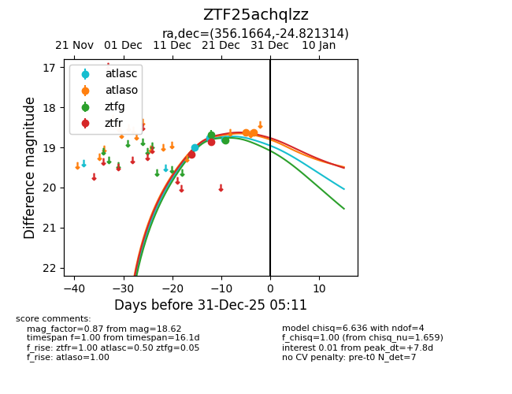
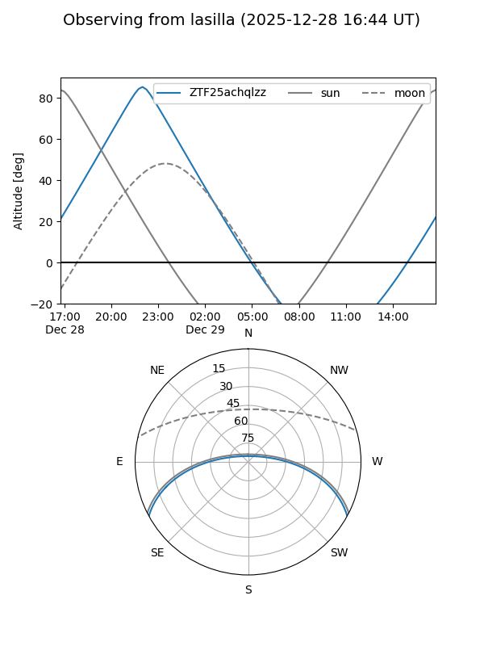
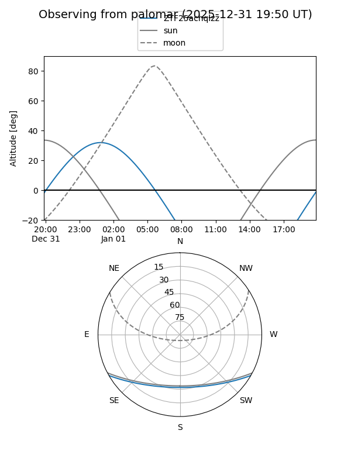
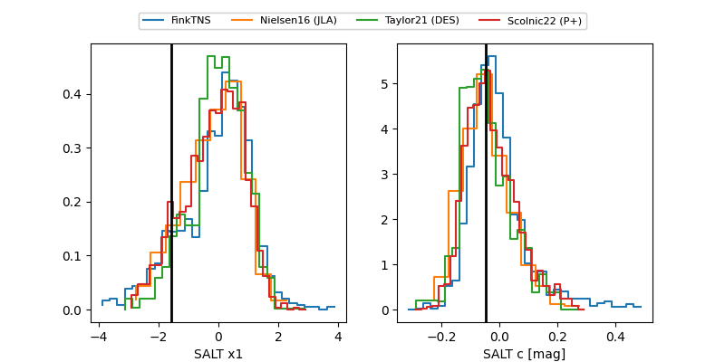

ZTF25achqlzz
Target ZTF25achqlzz at 2025-12-31 16:59
Aliases and brokers:
FINK:
Lasair:
ALeRCE:
alt names
ZTF25achqlzz (ztf,fink_ztf)
Coordinates:
equatorial (ra, dec) = 356.1664,-24.82131
equatorial (HMS+DMS) = 23:44:39.95,-24:49:16.73
galactic (l, b) = (37.9325,-74.82875)
Flags:
Photometry:
last atlasc=18.79, atlaso=18.62, ztfg=18.81, ztfr=18.86
3 atlasc, 2 atlaso, 2 ztfg, 2 ztfr detections
Lightcurve

Visibility


Additional plots
